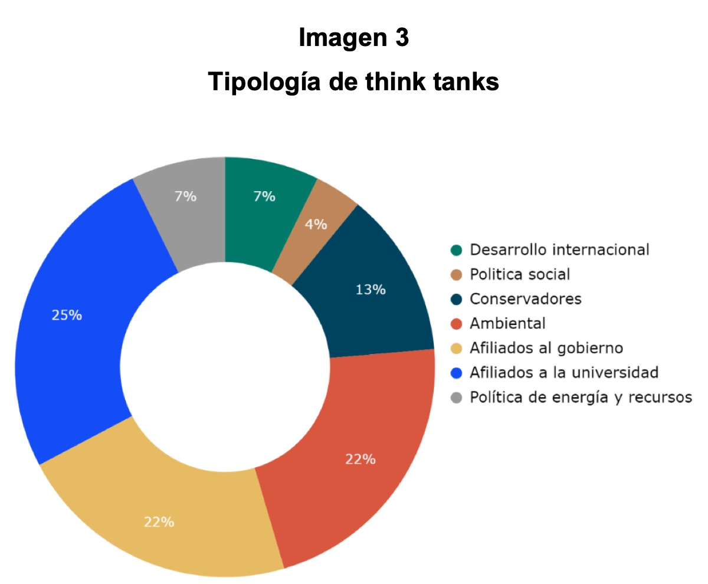

This chapter analyses public opinion on climate change in the United States and the presence and influence of lobbies and think tanks in US press coverage.
Book chapters · 2022
Opinión pública sobre el cambio climático en Estados Unidos, presencia e influencia de lobbies y think tanks en la prensa norteamericana
[Public Opinion on Climate Change in the United States: Presence and Influence of Lobbies and Think Tanks in the US Press]
In: Relaciones públicas en la economía y sociedad de confianza (pp. 123–136). Tirant lo Blanch
